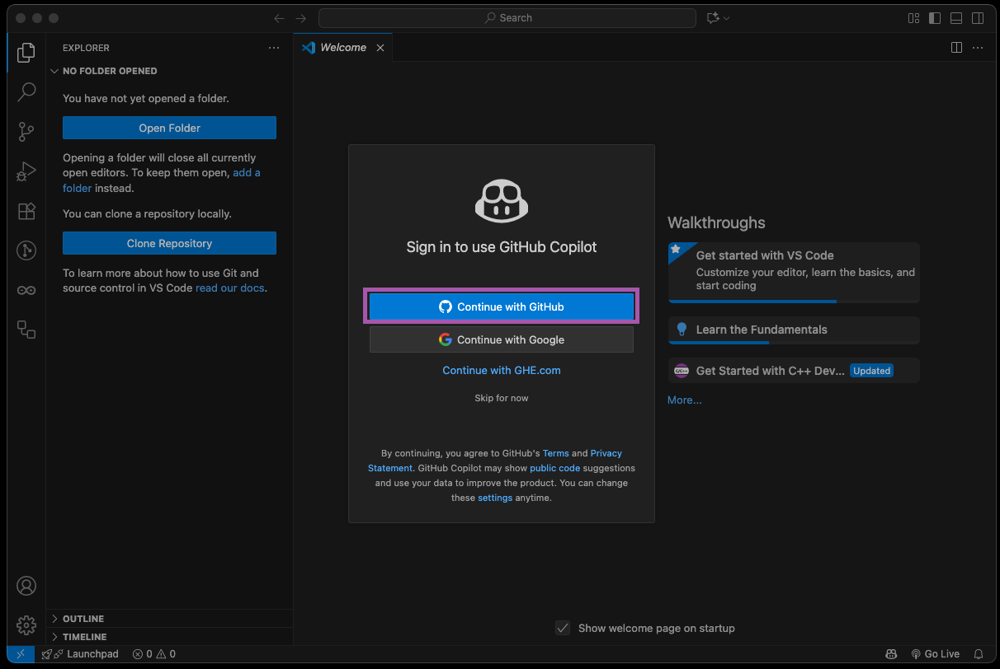
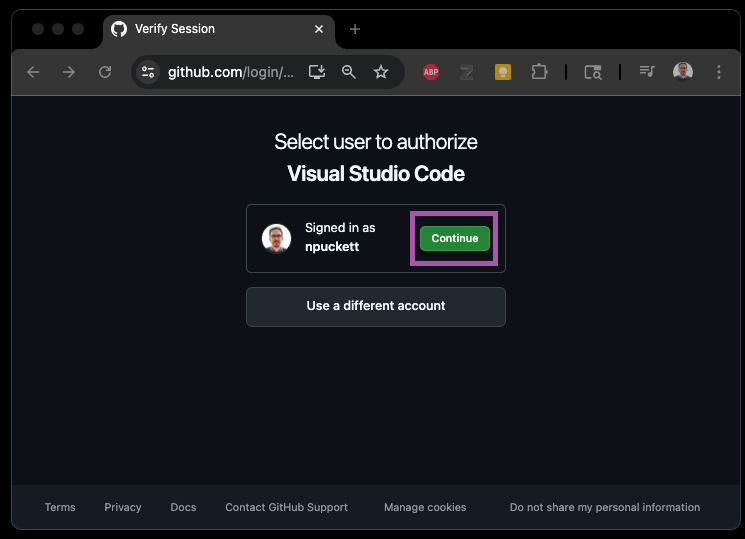
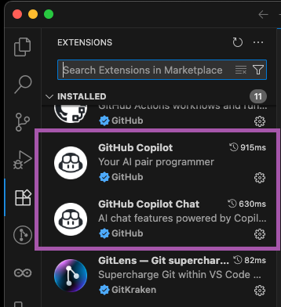
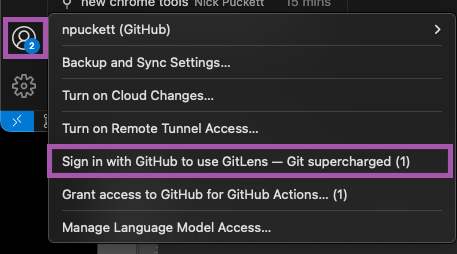
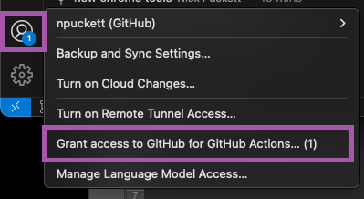
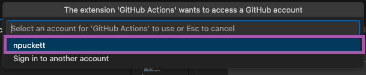

Signing into VS Code, Gitlens, and Actions
It is possible to use VS Code without signing it, but many tools and extensions require it. You will use your Github account to sign in for each item. Once you do this, you should stay signed in unless you manually sign out.
Summary
VS Code Sign-In Benefits
- Access to AI features and Copilot
- Automatic extension installation
- GitHub Copilot Chat integration
- Synchronized settings across devices
Extensions That Require Sign-In
- GitHub Copilot (AI code assistance)
- GitLens (Git supercharged)
- GitHub Actions (workflow automation)
Authentication Process
- Sign in to VS Code with GitHub
- Authorize extensions in browser
- Grant repository access
- One-time setup per extension
End Result
- Full access to development tools
- AI-powered coding assistance
- Enhanced Git workflow features
- Automated deployment capabilities
Part 1 - Sign In to VS Code & Github Copilot
Signing in will give you access to advanced tools in VS Code and will also automatically install the Github Copilot and Github Copilot Chat Extensions.
Step 1 - Click Sign In
Use the Account menu to sign in.

- Click the Account menu in the bottom left
- Select 'Sign in to use AI features…'
Step 2 - Select to Sign In with Github
You can sign in to VS Code with a variety of accounts, but you should always choose to use your Github account to keep things organized

- From the popup, choose 'Continue with Github'
Step 3 - Authorize in the Browser
If you are already signed into your Github account online, it will ask you Authorize. If not it will ask you sign in first.

Step 4 - Check that you now have Copilot Extensions
These steps will install both Copilot extensions and attach them to your Github account.

Part 2 - Sign In to Gitlens
Step 1 - Select it from the Account Menu
To connect Gitlens to your Github account, you need to sign in and authorize it

- Click your Account menu
- Select Sign In with Github to use GitLens - Git supercharged
Step 2 - Authorize in the browser
If you are already signed into your Github account online, it will ask you Authorize. If not it will ask you sign in first.
Part 3 - Allow Access for Github Actions
We need to authorize the Github Actions extension, so that it can access our account and repos.
Step 1 - Select it from the Account Menu
For security, you must explicitly grant the extension access to your account.

- Click your Account menu
- Select Grant access to Github for Github Actions…
Step 2 - Confirm the account to connect
Select your Github account id from the command palette
